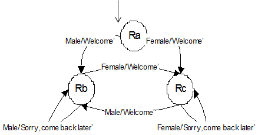

Finite State Machines
What is Finite State Machines (FSM)?
- Formal, mathematical version of state transition diagrams (STD).
- Define the behaviour of a simple machine
- Allow mathematical operations to be performed on them
- A (deterministic) finite state machine is defined by sextuple (S,S0,X,Y, μ,λ) in which:
- S is a finite (fixed) set of states and S0 is the initial state
- X is the finite input alphabet/set, for e.g ch for (change)
- Y is the finite output alphabet/set (channel 1, channel 2)
- function μ is the state transfer function
- function λ is the output function
Finite State Machines
Example 1: Light Switch
- We will consider the following system:
- there are three states for your ‘light switch’: ON, DIM, OFF
- the control system receives a message ch indicating when it should change the state.
- it changes state and outputs a value to the state, telling them what the new state should be.
- Sequence is: on, dim, off and then back to on
- So, how to define and draw Light switch FSM??
- FSM: Light Switch – Defined by
- The FSM T is defined by:
- State set {S0, S1,S2}
- Initial state is S0
- Input alphabet {ch}
- Output alphabet: {On ,Dim ,Off}
- Sequence: On, Dim, Off and back to On
- State transfer function: μ(S0,ch)=S1 , μ(S1,ch)=S2, μ(S2,ch)=S0
- Output function: λ(S0,ch)= Dim , λ(S1,ch)=Off, λ(S2,ch)=On
- The FSM T is defined by:
- State diagram for FSM T
- Initial state is at S0
Example 2: TV channels
- We will consider the following system:
- there are four channels for your TV: BBC1, BBC2, ITV, and Ch4
- the control system receives a message ch indicating when it should change the channel.
- it changes state and outputs a value to the channels telling them what the channel should be.
- Sequence: BBC1,BBC2,ITV,Ch4 and then back to BBC1
- Question: Define and Draw FSM T
- The FSM T is defined by:
- State set {S0,S1,S2,S3}
- Initial state is S0
- Input alphabet {ch}
- Output alphabet: {BBC1,BBC2,ITV,Ch4}
- Sequence: BBC1,BBC2,ITV,Ch4, BBC1
- State transfer function: μ (S0,ch)=S1 , μ (S1,ch)=S2 , μ(S2,ch)=S3 , μ(S3,ch)=S0
- Output function: λ(S0,ch)= BBC2 , λ(S1,ch)=ITV , λ(S2,ch)=Ch4 , λ(S3,ch)=BBC1
- State diagram for FSM T
- My initial state is at BBC1
Landline and call waiting FSM example
- Specification of a simple machine to handle call waiting
- Lets do a single call first where nobody is waiting
- (Case 1:Single call)
- You are near the phone
- Somebody calls and you answer. You have a conversation and then you end the call by hang up.
- In terms of FSM, our single call will look like this
- Initial state or idle (Ta)
- Single Call (Tb)
- (Case 1: Call waiting)
- You are near the phone
- Somebody calls and you answer. You have a conversation (CASE 1 –single call)
- Now, somebody else calls, you receive a signal ‘beep’. There is a call waiting
- So, you switch between conversations until one of them hangs up
- Ta – Phone idle (initial state)
- Tb – On a single call
- Tc – On call A [1ST CALL] and call B waiting [new 2ND call]
- Td - On call B [new 2ND call] and
- call A [1ST CALL] waiting. In other words, you switch between A and B
- <S,S0,X,Y,μ,λ>
- S={Ta,Tb,Tc,Td}
- S0=Ta
- X={pickup,hang-up,switch,answer_beep}
- Y=phone idle, on a single Call, on call A and call B waiting, on call B and Call A waiting
- μ={(Ta, pickup) → Tb, (Tb, hang-up) → Ta, (Tb, answer_beep) → Td, (Tc, hang-up) → Tb, (Tc, switch) → Td, (Td, switch) → Tc, (Tc, switch) → Td, (Td, hang-up) → Tb}
- In terms of FSM, our call waiting state will look like this. Lets do it in real world…next

Robot Nightclub Doorman example – Even Balance (Define/Draw FSM)
- <S,S0,X,Y,μ,λ>
- S={Ra,Rb,Rc}
- S0=Ra
- X={Male, Female}
- Y={‘Welcome’ (it’s a male or a female), ‘Sorry (it should be a male or a female), come back later’}
- μ={(Ra, Male) → Rb, (Ra, Female) → Rc, (Rb, Female) → Rc, (Rc, Male) → Rb},(Rb, Male) → Rb, (Rc, Female) → Rc
- λ={(Ra, Male)→ ‘Welcome’ (it’s a male), (Ra, Female)→ ‘Welcome’(it’s a female), (Rb, Female)→ ‘Welcome’’ (it’s a female) (Rc, Male)→ ‘Welcome’ (it’s a male), (Rb, Male) → ‘Sorry, come back later’ (it should be a female) (Rc, Female) → ‘Sorry, come back later’, (it should be a male)’}
- 
- Case 1 :
- 1. A male appears by the door
- “welcome” (Ra – Rb)
- Now, as it is even balance, we need a female next
- 2. A female appears by the door
- “welcome” (Rb –Rc)
- Now, as it is even balance, we need a boy next
- 3. A male appears by the door
- “welcome” (Rc – Rb)
- Now, as it is even balance, we need a female next. Suppose a male appear next.
- “Sorry, come back later” (Rb-Rb)
- 4. A female appears by the door
- “welcome” (Rb –Rc)
- 1. A male appears by the door
- Case 2
- 1. A female appears by the door
- “welcome” (Ra – Rc)
- Now, as it is even balance, we need a male next
- 2. A male appears by the door
- “welcome” (Rc –Rb)
- Now, as it is even balance, we need a female next
- 3. A female appears by the door
- “welcome” (Rb – Rc)
- Now, as it is even balance, we need a male next. Suppose a female appears next.
- “Sorry, come back later” (Rc-Rc)
- Another female appears
- “Sorry, come back later” (Rc-Rc)
- 4. A male appears by the door
- “welcome” (Rc –Rb)
- 1. A female appears by the door
Robot Nightclub Doorman example –Girl’s Choice (GBBB)
- μ={(Ra, girl) → Rb, (Rb, boy) → Rc, (Rc, boy) → Rd, (Rd, boy) → Re, (Re, girl) → Rb, (Ra, boy) → Rc, (Rb, girl) – Rb, (Rc, boy) → Rc, (Rd, girl) → Rd, (Re, boy) → Re}
- λ={(Ra,girl)→‘Welcome’, (Rb,boy)→ ‘Welcome’, (Rc, boy)→ ‘Welcome’, (Rd, boy) → ‘Welcome’, (Re, girl)→ ‘Welcome’, (Ra, boy) → ‘Welcome’, (Ra, boy) → ‘Welcome’, (Rb, girl) →’sorry, come back later’, (Rc, girl) → ’sorry, come back later’,
(Rd, girl) → ’sorry, come back later’, (Re, boy) → ’sorry, come back later’}